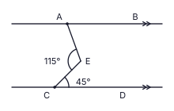
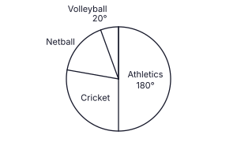
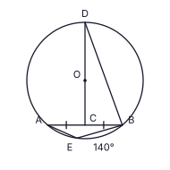
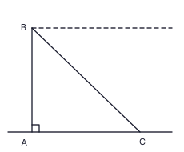
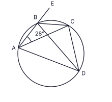
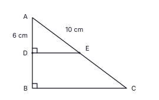

At a tea estate, 12 workers can pluck all the tea leaves of a section in 15 days. All the workers work at the same rate. How many more workers are needed to finish the same work in 10 days?
In the figure, AB ∥ CD. If ∠AEC = 115° and ∠ECD = 45°, find the size of ∠BAE.

Simplify: 34x + 56x − 23x
The base of a right prism is a triangle. Put a tick (✓) in the box against the quadrilateral that can NOT be a face of this prism.
(i) a square (ii) a rectangle which is not a square (iii) a parallelogram which has no right angle ☐ ☐ ☐
The pie chart shows the sport each student of a school chose for the sports meet. The number of students who chose Volleyball is 8. Find the number of students who chose Athletics.

In the figure, O is the centre of the circle. DOC is a straight line which meets the chord AB at its midpoint C. If AÊB = 140°, find the size of CD̂B.

Factorise: 2x2 − 72
Given that 100.7782 = 6, write down the value of lg 6000.
In the figure, AB is a vertical flagpole standing on level ground, with the flag at B. Malith stands at C on the ground and looks at the flag. On the figure, mark the angle of elevation of B from C as a, and the angle of depression of C from B as b. Write the relationship between a and b.

The height of a right circular cylinder is 3 times the radius of its base. Find the ratio of the area of paper needed to cover exactly its curved surface to the area of paper needed to cover exactly its base. (Curved surface area of a cylinder = 2πrh)
At a temple festival game, Supun throws two fair tetrahedral (four-faced) dice together. The faces of each die are numbered 2, 3, 5 and 7. Find the probability that the sum of the numbers on the two bottom faces is 10.
In the figure, ABC is a straight line and AB = BD = DC. If ∠DAB = 40°, find the value of x.

Let ξ = {x : x is an integer, 1 ≤ x ≤ 10}, A = {multiples of 3} and B = {even numbers}. Put a tick (✓) against the correct statement.
(i) A ∩ B = {3, 6} (ii) A ∩ B = {6} (iii) n(A ∪ B) = 8 ☐ ☐ ☐
Simplify: 6x2y3 × 4x4y ÷ 8xy2
The second term and the third term of a geometric progression are −4 and −12 respectively. Find the fifth term.
In the figure, ABCD is a cyclic quadrilateral and BD bisects ∠ADC. AB is produced to E. If ∠BAC = 28°, find the size of ∠CBE.

Find the highest common factor of 8a2b3, 12a3b and 20ab2c.
The area of the triangular base of a right prism is 38.5 cm2. A solid right circular cylinder has the same height and the same volume as the prism. Find the radius r of the cylinder. (Volume of a cylinder = πr2h)
In triangle ABC, D and E are the midpoints of AB and AC respectively. ∠ADE = 90°, AD = 6 cm and AE = 10 cm. Find the perimeter of the trapezium BCED.

Find the equation of the straight line which passes through the points (2, 4) and (5, 13).
In the figure, O is the centre of the circle and AB is a diameter. ABCD is a parallelogram and the side AD meets the circle at E. If ∠BCD = 64°, find the size of ∠ABE.

Hasini invested a sum of money for 2 years at an annual compound interest rate of 20%. The interest she earned in the second year was Rs 3 600, and the total amount she had at the end of 2 years was Rs 21 600. Find the sum of money she invested.
In the figure, O is the centre of the circle and OA ∥ BD. If AÔB = 70°, find the size of BÊD.

Solve the inequality 5x + 28 > 3, and write down the negative integers that satisfy it.
In the triangle ABC, a circle touches the side AB at B and also touches the side AC. A part of the construction is already shown. Complete the construction with a ruler and a compass, using what you know, and mark the centre of the circle as O. (You need not draw the circle.)